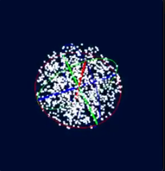

github.com/sbecker11/webgl-point-cloud
 Click here to see the live demo
webgl-point-cloud/
├── main.go <-- Go HTTP server
├── go.mod <-- Go module file (for both server and glf32 package)
├── go.sum
├── glf32/ <-- New linear algebra package
│ └── glf32.go
└── wasm/ <-- Directory for WebAssembly related files
├── wasm_main.go <-- Your WebGL application source
├── index.html <-- HTML page to load the WASM app
└── wasm_exec.js <-- Go's WASM glue code (copied here)
└── main.wasm <-- Compiled WebGL application (output of wasm_main.go)
Initialize Go Module (if not already done):
If this is a new project, in your-project-name/, run:
go mod init github.com/sbecker11/webgl-point-cloudMake sure the import for glf32 in wasm/wasm_main.go is correct relative to your go.mod file. If your go.mod is module your-project-name, then the import in wasm_main.go should be:
import "webgl-point-cloud/glf32"Copy the installed wasm_exec.js from $GOROOT directory.
cp "$(go env GOROOT)/misc/wasm/wasm_exec.js" webgl-point-cloud/wasm/If you can't find wasm_exec.js under $GOROOT then get it from using:
curl -o wasm/wasm_exec.js https://raw.githubusercontent.com/golang/go/master/misc/wasm/wasm_exec.jsIn your project root, run:
go mod tidyThis ensures that the local glf32 package is correctly recognized by both main.go and wasm/wasm_main.go.
Navigate to the wasm/ directory under your project-root:
cd webgl-point-cloud/wasm/Then compile:
GOOS=js GOARCH=wasm go build -o main.wasm wasm_main.goThis will create main.wasm in the same folder webgl-point-cloud/wasm/.
Navigate back to the project root:
cd webgl-point-cloud/Then compile the server:
go build -o server main.goThis creates an executable server (or server.exe on Windows) in your project root.
./serverYou'll see Server running at http://localhost:8080.
Open your web browser and go to http://localhost:8080/wasm/index.html
Click and drag the mouse on the canvas to rotate the scene.
glf32 package:glf32 inside your project root. Save the code provided previously (from "glf32/glf32.go") into your-project/glf32/glf32.go.go.mod:go.mod file, create one in your project root: go mod init your-project-name (replace your-project-name with your actual project name, e.g., github.com/yourusername/webgl-sphere-project)main.go, change the import glf32 to reflect your module path: import "your-project-name/glf32" (e.g., import "github.com/yourusername/webgl-sphere-project/glf32")go mod tidy in your project root to ensure dependencies are resolved.wasm/index.html file to load your WebAssembly application. The server is configured to serve the entire wasm directory.wasm_exec.js: Copy this file from your Go installation into the wasm/ directory:cp "$(go env GOROOT)/misc/wasm/wasm_exec.js" ./wasm/GOOS=js GOARCH=wasm go build -o wasm/main.wasm wasm/wasm_main.goserver.go) or a standard one like Python's: python -m http.server 8080This setup fully integrates your glf32 package, uses the correct column-major matrix logic, and renders your animated sphere and axes in WebGL.